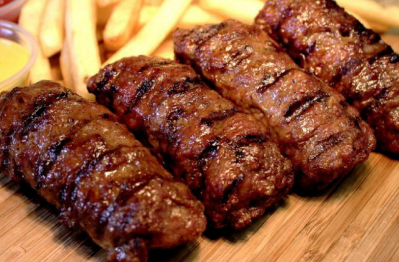

Mici

Is a dish from Romanian cuisine, consisting of grilled ground meat rolls made from a mixture of beef and lamb with spices.
Ingredients:
- 500 g ground beef
- 500 g ground lamb
- 180 ml beef stock
- 50 ml beer
- 1 tbs soda bicarbonate
- 1 tbs salt
- 1/2 ground pepper
- 1/2 tbs coriander powder
- 1/2 tbs ground cumin
Recipe instructions:
- Place the meat into a bowl. In a larger mug, mix the beef stock with beer, soda bicarbonate, spices, salt pepper and give it a good stir until the salt has dissolved entirely.
- Add this liquid mixture to the meat and mix really well until the mixture becomes almost a paste.
- You can now work with a dash of oil or water to form the sausages into their shapes.
- Transfer the open sausages to the fridge to rest for 2 to 4 hours but you can leave them overnight too.
- Place them onto a hot, hot grill or in a hot pan and cook them on each side for no longer than 4 min.
Return to main page